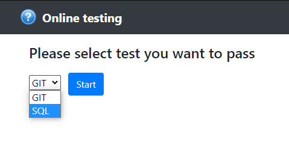
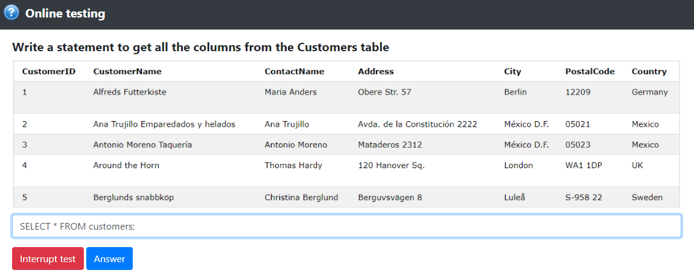
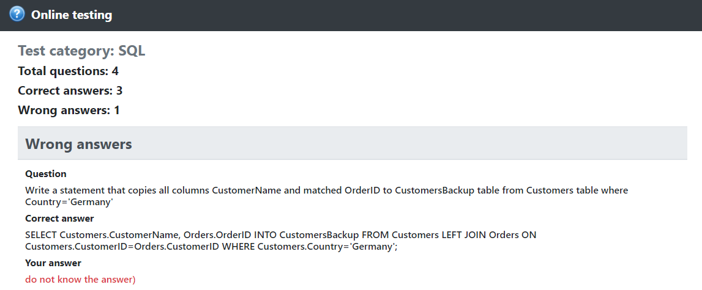

Система онлайн тестирования
Протестировать приложение
Source code на Github
Данное приложение позволяет пройти онлайн тест по выбранной тематике.
Пользователь выбирает тему, по которой он хочет пройти тест.
После этого программа загружает в память список вопросов, по выбранной теме. Данный список сохраняется в сессии пользователя.
Пользователь поочередно отвечает на вопросы теста, вводя ответ в текстовое поле. В случае неверного ответа на вопрос информация об этом сохраняется в сессии пользователя.
Пользователь может в любой момент прервать прохождение теста и перейти к результатам, нажав кнопку "Interrupt test".


После ответов на все вопросы теста или нажатия кнопки "Interrupt test" программа представляет пользователю результаты выполнения теста.
Вся необходимая для формирования результатов информация берется из сессии пользователя.
В случае если пользователь давал неверные ответы, программа выводит список соответствующих вопросов, а также отображает правильный ответ на вопрос и ответ, данный пользователем.
